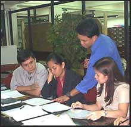

| PRIO
Trains the Academic Community
by: PRIO Department
In
our quest to institutionalize Total Quality Management, our
unit, the Process Review and Improvement Office (PRIO) in
coordination with Human Resource Development Office (HRDO)
conducted TQM trainings during the 1st term of school year
2003-2004. In these trainings, the following modules were
tackled:
Module 1: Change Management
Module 2: Customer Service
Module 3: 5S Good Housekeeping
Module 6: Basic Documentation and Data Control
Module 7: Document and Data Control
The workshop leaders were Mr. Joel G. Kisteria, MS. Patricia
B. Antonio, MS. Janet O. Chua and MS. Amalia D. Salcedo. The
workshop format was highly instructive, combining lectures
and hands on. These modules were designed by the workshop
leaders based on research and best practices applicable to
the educational institution.
The target audience was faculty members (full-time and part-time),
administrators and CAPs.
The participants received a workbook containing workshop
proceedings, bibliography of useful information, and list
of websites.
The participants’ expectations were
· To learn new tools to be used at work
· To update themselves with new trends to solve problems
at work
· To reconfirm their understanding of the topics presented
The overall turn out of attendees was 70 with an average
class size of 12. The attendance was very satisfactory and
very encouraging because there were a significant number of
attendees from DLSU Manila and DLSU Lipa.
The participants’ average evaluation of the modules
was 4.25 on a scale of 1-5 where 5 is the highest.
Future programs will include Module 4: TQM Education and
Concepts of Improvement to be conducted by Mr. Joel G. Kisteria
and Module 5: Problem Solving Tools and Techniques to be conducted
by Mr. Teodoro M. Soliva, Jr. starting 2nd Term School Year
2003-2004.
We encourage the other offices to take advantage of these
modules to learn ways to improve work and efficiency that
ensures our customers of Quality Education.
THE
ePurse System
The DLSU ePurse system is designed to make use of the existing
smart cards that we are currently using as ID cards for DLSU
employees and students (ID-102 and above only). The DLSU ePurse
system is an electronic method of carrying cash and making
payments
>>>
Action
Plan 2003-2004
“The greatest thing in this world is not so much where
we are, but in what direction we are moving. Unless you set
big, worthwhile goals, you’ll never move beyond your
current abilities.” - Oliver Wendell Holmes [more
here]
|